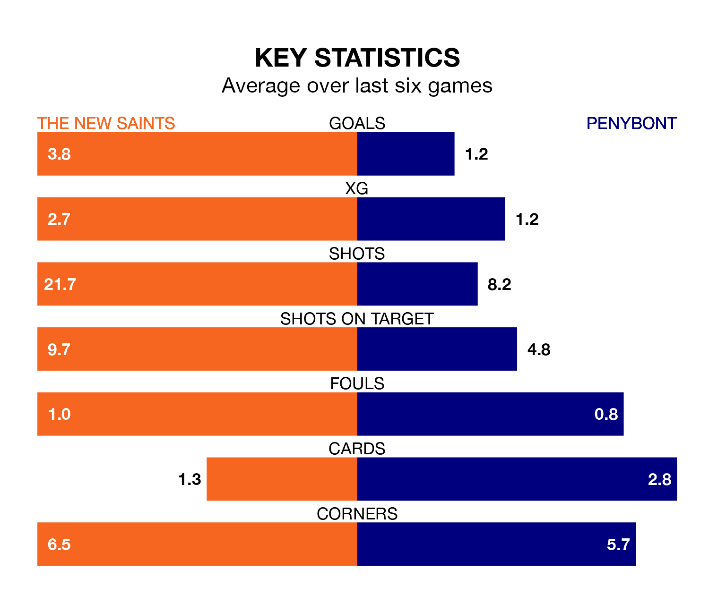

The New Saints host Penybont at the Park Hall Stadium on early Saturday on the back of 10 consecutive wins in the Cymru Premier.
It means The New Saints have picked up the maximum 30 points from their last 10 games, and they face a Bont side who lost their last match, and have collected eight points from the last possible 30.
With 56 goals in 16 games so far this season, The New Saints are the league's highest scorers with 3.5 goals per game. And they are conceding fewer than average, letting in 12 goals at a rate of 0.8 per game.
Penybont, meanwhile, are below average scorers, with 1.3 goals per game, compared to a league average of 1.5. They have conceded 1.6 goals per game.
The Saints are top of the table after 16 games, of which they have won 14 and drawn two, earning 44 points.
Bont are six places behind the home side in seventh, with six wins and four draws putting them on 22 points.
With Connor Roberts between the sticks, The New Saints can rely on one of the league's safest pair of hands. He has kept seven clean sheets in his 16 appearances this season, and only one other 'keeper – Bala Town's Kelland Absalom – has been able to prevent the opposition scoring on more occasions in the Cymru Premier.
In the visitors' net, Alex Harris has three clean sheets in eight games. He has conceded a goal every 66 minutes, more than twice as often as the 144 minutes between goals for Roberts.
In the last three years, The New Saints and Penybont have played each other on 14 occasions. The New Saints won 10 of them and they drew four times.
On average, the Saints scored 2.2 goals and Bont 1.0 in those matches.
Their last meeting was on October 7, when The New Saints won 4-1 away.
The New Saints' last match was on November 28, a 3-1 win against Aberystwyth Town, with Alex Darlington (own goal), Brad Young and Daniel Davies getting the goals for the Saints.
Penybont lost 2-0 against Bala Town last time out, on December 2.
